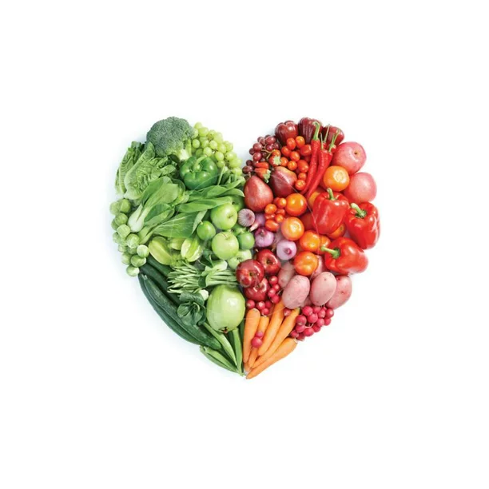
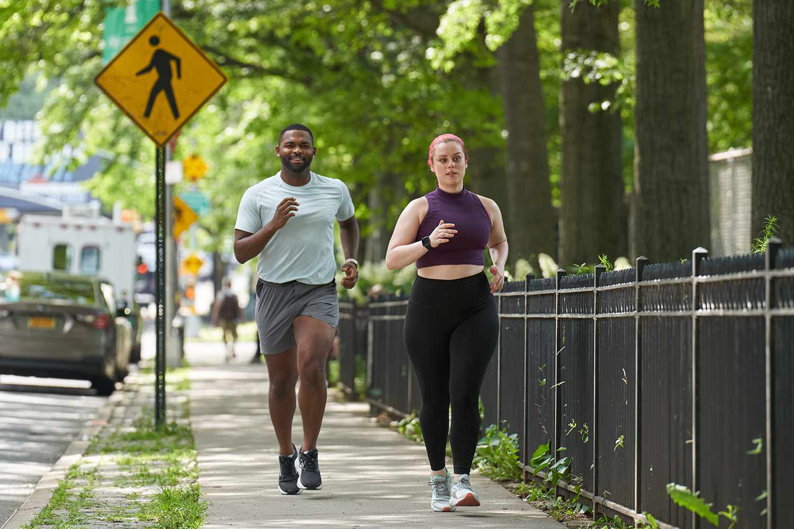
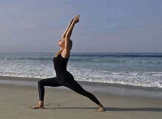
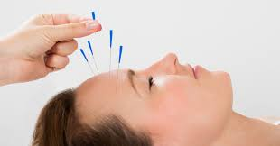

Healthy Diet
A healthy diet is a large part of physical health. Eating the right food will help to filter out toxins and instead nourish our bodies. We all need the right nutrition to feel our best.
Excercise
Another part of physical health is excercise. Staying active either by going for walks, jogging, or going to the gym helps our bodies to remember how to produce endorphins and the other "feel good" hormones.
Yoga
Another way to help calm our minds and connect with our inner selves is with yoga. It is a good way to stretch and stregnthen muscles, focus breathing, and meditate.
Acupuncture
Another way to deal with the stress and anxiety of getting clean is with acupuncture. This can also be used to help curb cravings and urges as well as the physical discomfort of early recovery.
Volunteer
Helping others really puts our own lives and pain into perspective. Volunteering can be a great way to take yourself out of your own troubles and focus on helping another, whether it is an animal or another person.